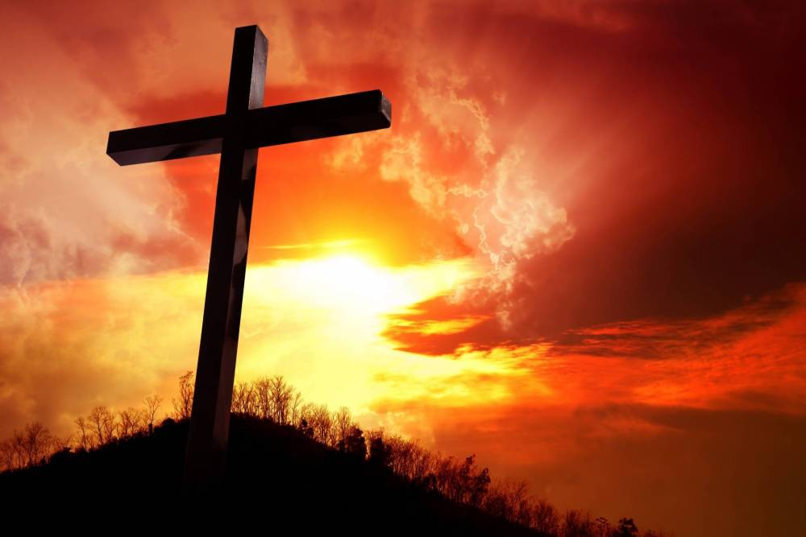
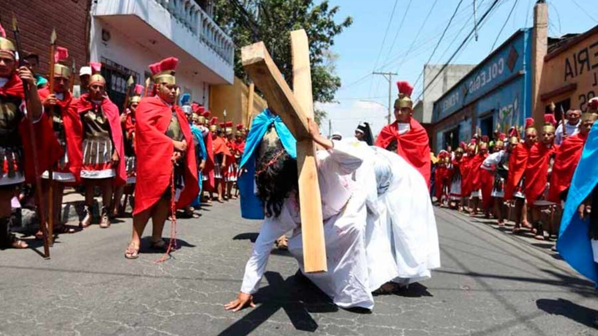

Procesiones: Las procesiones son una parte fundamental, especialmente la de la "Vía
Crucis",
que se realiza en diversas iglesias.
Alfombras de flores: Se crean hermosos tapices con flores y aserrín en las calles, simbolizando la devoción y el respeto.

Alfombras de flores: Se crean hermosos tapices con flores y aserrín en las calles, simbolizando la devoción y el respeto.
Peregrinaciones: Muchos devotos realizan peregrinaciones a la Virgen de la Candelaria en
la
localidad de La Cancha.
Misas y Vía Crucis: Se celebran con gran fervor, con la participación activa de la comunidad.
Misas y Vía Crucis: Se celebran con gran fervor, con la participación activa de la comunidad.

Tradición del Jueves Santo: Se lleva a cabo la ceremonia del "Lavado de pies",
simbolizando
la humildad de Jesús.
Sábado de Gloria: Se realiza la bendición del fuego nuevo y la preparación del
"Sábado de Gloria", donde se celebra la Resurrección.
Sábado de Gloria: Se realiza la bendición del fuego nuevo y la preparación del
"Sábado de Gloria", donde se celebra la Resurrección.

Fuego Nuevo: En el Sábado Santo, se enciende el fuego nuevo en las iglesias,
simbolizando la
resurrección de Cristo.
Misachico: Un rito ancestral donde se coloca comida y bebida en ofrenda, representando la unión familiar y la gratitud.
Misachico: Un rito ancestral donde se coloca comida y bebida en ofrenda, representando la unión familiar y la gratitud.
La Pasión de Cristo: Se realizan representaciones teatrales de la Pasión, especialmente
en
la ciudad de Potosí.
Cruz de Mayo: En algunas comunidades, se erigen cruces decoradas, simbolizando la esperanza y la fe.
Cruz de Mayo: En algunas comunidades, se erigen cruces decoradas, simbolizando la esperanza y la fe.
Festival de la Virgen del Socavón: Aunque no es exclusivamente de Semana Santa, coincide
con
esta época y atrae a muchos peregrinos.
Misas y Reflexión: Las celebraciones incluyen misas y actividades religiosas que fomentan la reflexión y la penitencia.
esta época y atrae a muchos peregrinos.
Misas y Reflexión: Las celebraciones incluyen misas y actividades religiosas que fomentan la reflexión y la penitencia.
Tradición del Pescado: Se consume pescado como símbolo de abstinencia. Las familias se
reúnen para compartir comidas.
Misas y Procesiones: Las comunidades se unen en celebraciones religiosas, con énfasis en la espiritualidad.
Misas y Procesiones: Las comunidades se unen en celebraciones religiosas, con énfasis en la espiritualidad.
Celebraciones Simples: Las tradiciones son más sencillas, enfocándose en la misa y
actividades comunitarias.
Comida Familiar: Se enfatiza el compartir en familia, con platos típicos de la región.
Comida Familiar: Se enfatiza el compartir en familia, con platos típicos de la región.
Semana Santa en Sucre: Se realizan procesiones y la "Vía Crucis" en el centro histórico
de
Sucre, con gran participación popular.
Cantos Tradicionales: Se entonan cantos y oraciones que reflejan la devoción de la comunidad.
Cantos Tradicionales: Se entonan cantos y oraciones que reflejan la devoción de la comunidad.